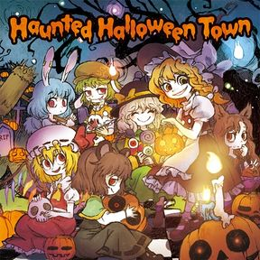
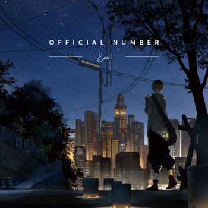
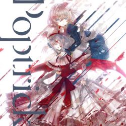
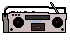

HanSoo Lee's Audio Visualizer
Track:
Brown Wind - M2U
楽しい夜のお茶会 - Ringo's Tea Party - ARM
sister - Eve
wish to the moon - Poplica*
天色の四季 - 暁Records
Go Full Screen
Theme
Sunset Plains
Strobe Light City
Radius
Delay
Waveform/Frequency
Frequency
Waveform
Tint Red
Invert
Noise
Lines



